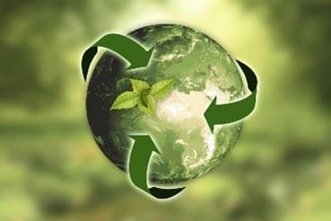

El reciclaje es el proceso de recolectar materiales y convertirlos en nuevos productos; de lo contrario, estos productos se eliminarán como
basura.
Hay tres tipos principales:
-El reciclaje primario o de circuito cerrado convierte el material en más del mismo material, por ejemplo, papel en más papel.
-El nivel 2 convierte los productos desechados en otros artículos, aunque estén hechos de los mismos materiales.
-Descomposición terciaria o química de materiales para producir algo muy diferente a ellos.
basura.
Hay tres tipos principales:
-El reciclaje primario o de circuito cerrado convierte el material en más del mismo material, por ejemplo, papel en más papel.
-El nivel 2 convierte los productos desechados en otros artículos, aunque estén hechos de los mismos materiales.
-Descomposición terciaria o química de materiales para producir algo muy diferente a ellos.
Importancia del reciclaje

El reciclaje es una de las actividades diarias más simples y significativas que podemos realizar. Si bien el ser humano es el responsable de
generar grandes cantidades de residuos, el reciclaje también es un ejemplo de responsabilidad social y protección del medio ambiente pues:
-Favorece el mantenimiento de los recursos naturales al poder reutilizar toda la materia que se utiliza.
-Se reducen los costes de la energía al no necesitar de tanto petróleo para su desarrollo, sobre todo, porque el consumo de la misma es inferior
cuando son productos reciclados.
-Disminuye los niveles de contaminación al disponer de menos residuos.
-El aire, el agua y el suelo se mantienen más limpios por lo que es un beneficio directo.
generar grandes cantidades de residuos, el reciclaje también es un ejemplo de responsabilidad social y protección del medio ambiente pues:
-Favorece el mantenimiento de los recursos naturales al poder reutilizar toda la materia que se utiliza.
-Se reducen los costes de la energía al no necesitar de tanto petróleo para su desarrollo, sobre todo, porque el consumo de la misma es inferior
cuando son productos reciclados.
-Disminuye los niveles de contaminación al disponer de menos residuos.
-El aire, el agua y el suelo se mantienen más limpios por lo que es un beneficio directo.
Inauguran la planta de reciclaje plástico posconsumo más grande del país.
10 mil toneladas de plástico al año dejarán de ir a ecosistemas y rellenos sanitarios.
10 mil toneladas de plástico al año dejarán de ir a ecosistemas y rellenos sanitarios.
Bancolombia espera evitar 158 toneladas de CO2 al año con tarjetas de PVC reciclado.
La entidad financiera espera que su portafolio de tarjetas débito y crédito tenga al año 2022 una producción integralmente
sostenible.
La entidad financiera espera que su portafolio de tarjetas débito y crédito tenga al año 2022 una producción integralmente
sostenible.
Así cambiará el reciclaje en Colombia tras entrada en vigencia de una norma.
Colombia solo recicla el 16,5 % de las más de 12 millones de toneladas de residuos sólidos que produce anualmente, por
lo que la entrada en vigencia el próximo año de una norma aprobada en 2018 podría ayudar a mejorar este panorama.
Colombia solo recicla el 16,5 % de las más de 12 millones de toneladas de residuos sólidos que produce anualmente, por
lo que la entrada en vigencia el próximo año de una norma aprobada en 2018 podría ayudar a mejorar este panorama.
¡Ojo!: Así es el nuevo código de colores para separar las basuras en Colombia.
La nueva normativa para la separación de residuos sólidos comenzó a regir este primero de enero en todo el territorio
nacional. En Colombia se producen 12 millones de toneladas de basura al año, de las cuales solo se recicla el 11%. Habrá
multa para quienes no reciclen.
La nueva normativa para la separación de residuos sólidos comenzó a regir este primero de enero en todo el territorio
nacional. En Colombia se producen 12 millones de toneladas de basura al año, de las cuales solo se recicla el 11%. Habrá
multa para quienes no reciclen.